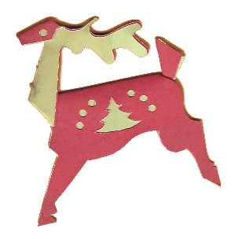

Much of Robin's work was done with multi-layer free-hand cutting. Here are some samples, with construction details when possible.
The Animals
| Red and White Horse | Elephant | Zebra | Cow | Tiger |
 |
The animals were an especially noteable innovation. When properly folded they can stand up, though if left standing they legs tend to bend under the weight. For stable display they should be supported inside the middle or hung over a wire. But they also fold flat for storage.
| hippopatamus | reindeer | zebra 2 | orange horse | fox |
 |
 |  |
| 3 layer horse | ||||
Other Cut Paper Works
| Saint Patrick's Day | Heart Cutting | Unicorn...unusual | Carousels | |
 |
 |